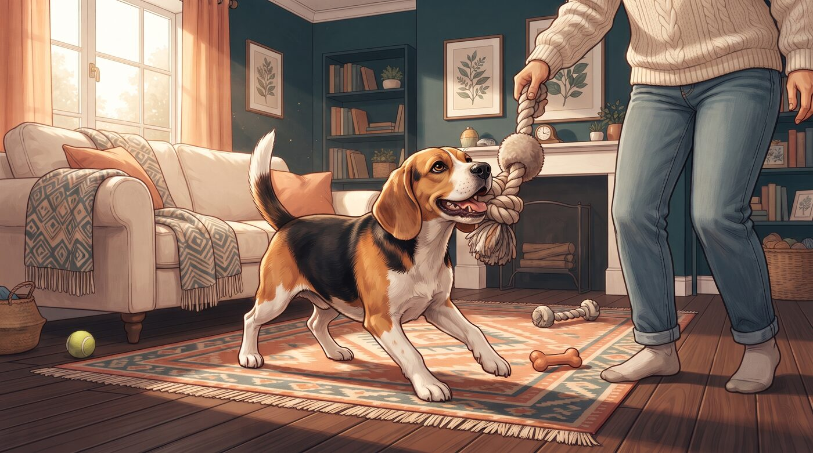
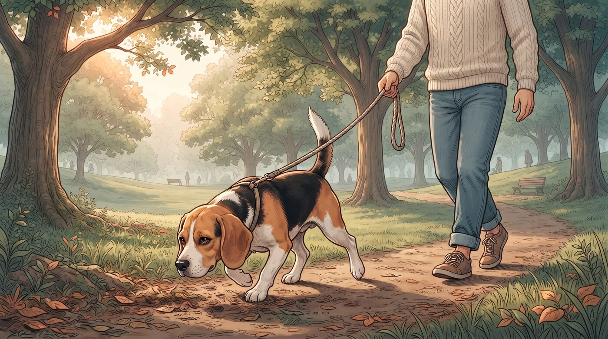
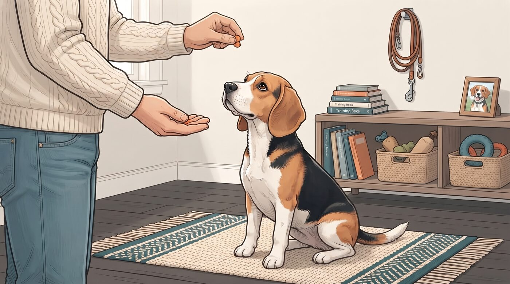
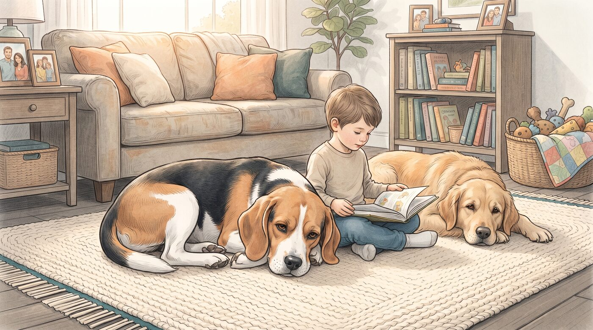
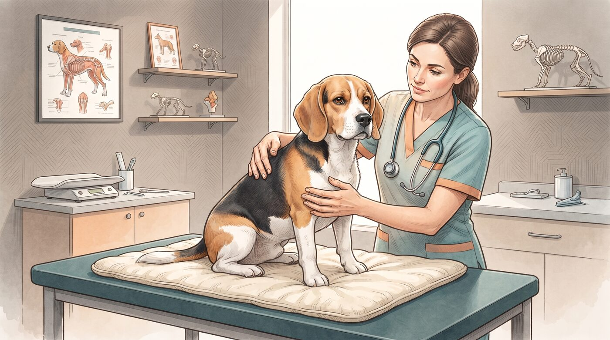
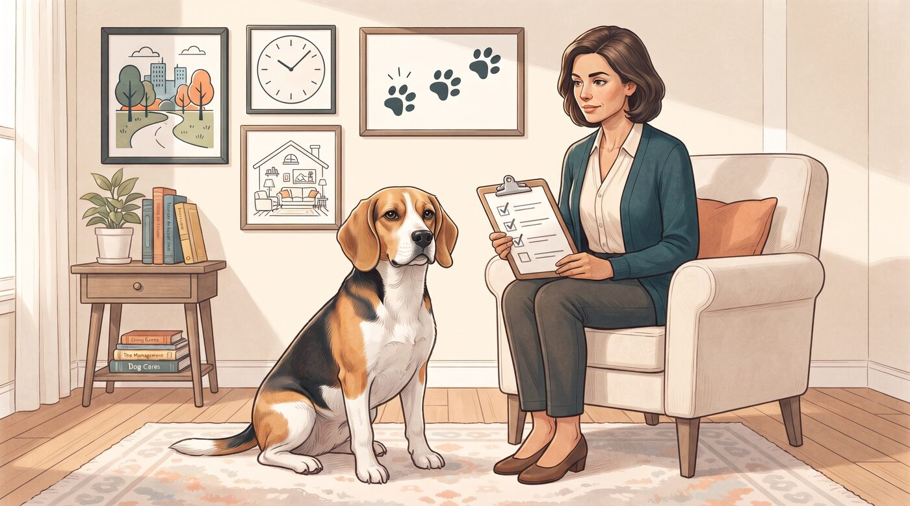

Quando alguém pensa em Beagle, a primeira imagem que vem à cabeça quase sempre é a mesma: orelhas longas, olhar pidão, latido característico e aquela expressão de quem está sempre pronto para uma aventura — ou para pedir comida.
Não é à toa que o Beagle é descrito como "merry", alegre, pelo American Kennel Club. Ele é energético, fácil de conviver, adora companhia e tem um jeito divertido de ser que conquista muitas famílias.
Mas existe outro lado da moeda. Um Beagle sem atividade suficiente, sem regras claras e sem estímulos pode se tornar destrutivo, barulhento e difícil de manejar. A pergunta certa não é "Beagle é bom para mim?". É: "eu tenho rotina, espaço e disposição para oferecer o que um Beagle precisa?"
1. Origem e função: por que o Beagle é assim?
O Beagle foi desenvolvido como cão de caça de pequeno porte, especializado em seguir trilhas de odor, especialmente de coelhos e lebres. Ele foi selecionado para trabalhar em grupo, perseguir presas por longos períodos e sinalizar sua localização com latidos e "uivos" característicos.
Essa história explica muito do comportamento atual da raça. O Beagle é naturalmente curioso, persistente, sociável e muito guiado pelo olfato. Ele gosta de companhia, foi feito para caçar em bando e tende a se dar bem com outros cães.
Por outro lado, essa mesma genética faz com que ele se distraia facilmente com cheiros, tenha tendência a seguir o nariz e ignore comandos quando encontra algo interessante no chão. Não é teimoso por maldade; é um cão de farejo com instinto muito forte.
Entender isso ajuda a ajustar a expectativa. Um Beagle não foi feito para passar o dia sozinho no quintal. Ele foi feito para se movimentar, explorar e interagir.
2. Temperamento: alegre, sociável e cheio de energia

O AKC descreve o Beagle como alegre, enérgico, fácil de conviver e leal. É um cão que geralmente se dá bem com crianças, aceita bem visitas e costuma ser sociável com outros cães e pets.
Muitos tutores relatam que o Beagle é divertido, brincalhão e parece estar sempre de bom humor. Ele gosta de participar da rotina da família, acompanha as pessoas pela casa e adora estar junto.
Só que essa mesma energia, se não for bem direcionada, pode virar problema. Um Beagle entediado pode cavar, mastigar móveis, latir excessivamente e procurar comida em qualquer lugar. A VCA reforça que o Beagle precisa de bastante exercício físico e mental para se manter no melhor comportamento.
Se você busca um cão tranquilo, que passe o dia dormindo no sofá e quase não exija atenção, o Beagle provavelmente não é a raça mais indicada. Se, por outro lado, você quer um companheiro ativo, disposto a passeios, brincadeiras e interação, ele pode ser uma excelente escolha.
3. Necessidade de exercício: mais do que o tamanho sugere

O Beagle é compacto, mas carrega muita energia em um corpo pequeno. Diretrizes atuais sugerem que um Beagle adulto precisa de pelo menos 45 a 60 minutos de exercício moderado a vigoroso por dia, idealmente divididos em mais de um passeio.
Isso não significa apenas deixar o cão solto no quintal. O Beagle foi feito para caminhar, farejar e explorar. Passeios com guia, trilhas, brincadeiras de busca, esportes caninos e atividades que usem o olfato são excelentes formas de gastar energia de maneira construtiva.
A VCA observa que, embora muitas necessidades físicas possam ser atendidas com brincadeiras no quintal, o Beagle prefere caminhar, cheirar e explorar.
Um Beagle bem exercitado tende a ser muito mais tranquilo dentro de casa. Um Beagle sem atividade suficiente pode se tornar inquieto, barulhento e destrutivo. O exercício não é opcional; é parte essencial do manejo da raça.
4. Treinamento e manejo: inteligência com distração constante

O Beagle é inteligente e aprende rápido, mas tem uma característica que desafia muitos tutores: distrai-se com facilidade, especialmente quando há cheiros interessantes por perto.
A VCA descreve o Beagle como um cão que aprende rapidamente, mas é facilmente distraído, e que responde bem a treinamento baseado em recompensas, especialmente com petiscos.
Isso significa que métodos duros, puxões de guia e punições tendem a funcionar mal. O Beagle responde melhor a sessões curtas, divertidas e consistentes, com reforço positivo, petiscos e brincadeiras.
Outro ponto importante: o Beagle tem forte instinto de seguir o nariz e tende a não voltar quando chamado se encontrar algo interessante. Por isso, áreas seguras e cercadas são essenciais para permitir que ele corra e explore sem risco de fuga.
Se você mora em local sem cerca adequada, evite soltar o Beagle sem guia. O instinto de farejo pode falar mais alto do que qualquer comando.
5. Convivência em família e com outros pets

O Beagle costuma ser uma raça muito familiar. O AKC destaca que ele é bom com crianças, sociável e gosta de companhia.
Por ter sido criado para trabalhar em grupo, o Beagle geralmente se dá bem com outros cães e pets. A solidão prolongada pode ser difícil para ele. Um Beagle que fica muitas horas sozinho pode desenvolver ansiedade de separação, latidos excessivos e comportamentos indesejados.
A VCA observa que o Beagle é excelente e brincalhão com crianças, mas sua natureza independente pode ser frustrante para crianças em alguns momentos.
Se sua rotina envolve longos períodos fora de casa, considere formas de oferecer companhia, como outro cão, enriquecimento ambiental, passeios antes de sair e interação de qualidade quando estiver em casa.
6. Saúde e cuidados: o que observar ao longo da vida

O Beagle é uma raça geralmente saudável, mas, como qualquer cão de raça pura, tem predisposição a algumas condições.
Entre os pontos de atenção estão:
- Obesidade: o Beagle ama comida e tem tendência a ganhar peso com facilidade. A VCA alerta que Beagles adoram comer e têm tendência a se tornar obesos, exigindo dieta balanceada e controle de calorias.
- Problemas de coluna: o Beagle está entre as raças predispostas a doença do disco intervertebral (IVDD), que pode causar dor nas costas, fraqueza nos membros e, em casos graves, paralisia.
- Epilepsia: a raça pode apresentar epilepsia idiopática, com crises que variam em frequência e intensidade, muitas vezes controladas com medicação.
- Hipotireoidismo e outras condições endócrinas: também relatadas na raça.
- Cuidados com orelhas: as orelhas longas e caídas favorecem acúmulo de umidade e cera, exigindo limpeza regular para prevenir otites.
A pelagem do Beagle é curta, densa e de manutenção relativamente simples. Escovação semanal ajuda a remover pelos mortos e controlar a troca, que é moderada ao longo do ano e mais intensa em algumas épocas.
Banho frequente não é necessário, a menos que o cão se suje muito. O foco deve estar na alimentação adequada, exercício regular, controle de peso e visitas veterinárias de rotina.
7. Beagle é para você? Perguntas para fazer antes de decidir

Antes de escolher um Beagle, eu faria uma autoavaliação bem direta. A raça pode ser maravilhosa no lar certo e desafiadora no lar errado.
Pergunte-se:
- Tenho tempo e energia para oferecer pelo menos uma hora de exercício por dia?
- Minha rotina permite passeios regulares, brincadeiras e interação?
- Tenho espaço seguro, de preferência com área cercada, para ele explorar?
- Estou disposto a investir em treinamento consistente e baseado em reforço positivo?
- Consigo lidar com latidos e "uivos" característicos da raça?
- Estou preparado para controlar a alimentação e prevenir obesidade?
- Existe alguma restrição de condomínio ou barulho na minha região?
O AKC reforça que o Beagle requer bastante exercício e seria mais feliz em uma casa ativa, com estimulação física e mental regular.
Se a resposta para várias dessas perguntas for "não", talvez seja melhor considerar outra raça ou adotar um cão adulto já avaliado por profissionais. Se a resposta for "sim", você pode ter em mãos um companheiro leal, divertido e cheio de vida.
Um cão que exige entendimento — e retribui com alegria
Um Beagle pode ser o cão da família dos seus sonhos — ou um desafio diário. A diferença quase sempre está no quanto você entende e atende as necessidades reais da raça.
Este conteúdo é educativo e não substitui orientação de um médico-veterinário ou profissional de comportamento canino. Antes de adquirir qualquer cão, avalie sua rotina, espaço e condições para oferecer uma vida adequada ao animal.